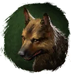
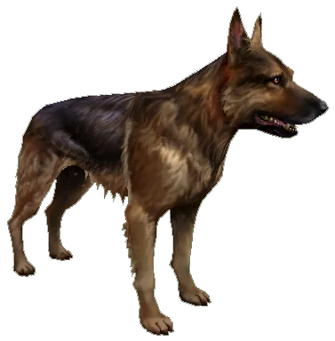
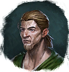

Открыть в интерактивной вики →

| Уровень | 8 |
|---|---|
| Прокачка | есть |
| Ранг в стае | 1 |
| Здоровье | 350 |
| Мана | 350 |
| Выносливость | 650 |
| Статистика | Уровень: 7, ранг: 1, здоровье: 350, мана: 350, выносливость: 650 |
Цена
1.5к  Золото
Золото
ЗолотоГде взять
Покупается у Годрева

ГодревНавыки


Доп. информация
Описание
 | Барбос как барбос. Преданно бегает рядом с хозяином и, когда надо, кусает до крови. Вздыбив шерсть на загривке, впадает в боевой транс и может напугать противников. Своим воем способен парализовать жертву, облегчая себе добивание врага. Атакует физически. Использует: Транс, Боевой клич, Рёв, Укус. | |